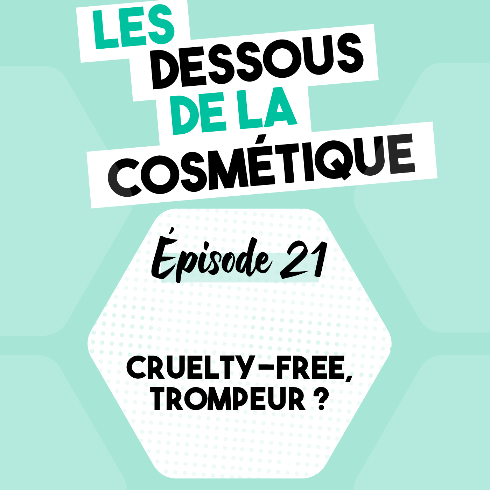

Podcast : Épisode 21, cruelty-free, trompeur ?

Écoutez l'épisode audio sur l'allégation cruelty-free pour savoir si elle est trompeuse 🎧
- Disponible sur : Épisode 21 : Cruelty-free, trompeur ?
- À retrouver également sur Spotify, Apple Podcast et Google Podcast
L'allégation cruelty-free:
- Cosmétique qui n'a pas engendré de test sur les animaux
- À ne pas confondre avec vegan = cosmétiques qui ne contiennent pas de matières provenant de l'exploitation animalière
- Le règlement Cosmétique Européen, article 18 interdit les tests sur les animaux des cosmétiques vendus en Europe
- Le règlement 655/2013 interdit les allégations qui portent sur des caractéristiques imposées par la réglementation
Pourquoi se questionner sur la validité de l'allégation cruelty-free ?
Il existe de plus en plus de marques proclamant être vegan ou du moins cruelty-free avec des marketings tournés autour de slogan comme "fighting animal testing". Ces slogans, sont-ils justifiés ? Sont-ils permis en France ?👇
1. Que signifie l'allégation "cruelty-free" sur un cosmétique ?
Le terme "cruelty-free" vient de l'anglais et peut être traduit par "sans cruauté". Cette allégation n'est pas réglementée et donc son utilisation en cosmétique n'est pas définie. Généralement un cosmétique cruelty-free est considéré comme un cosmétique qui n'a pas engendré de test sur les animaux, ni sur la formule finale, ni sur les ingrédients individuellement. Mais dans quelle mesure ?2. Un cosmétique cruelty-free est-il un cosmétique vegan ?
L'allégation cruelty-free ne doit pas être confondu avec l'allégation vegan ou végétalien, en français. Un cosmétique végétalien est un cosmétique qui ne contient aucun ingrédient ou emballage provenant de l'exploitation animalière, c'est-à-dire pas:
- d'ingrédient issu de l'exploitation des abeilles comme la cire d'abeille, le miel ou la gelée royale
- de carmin pour la pigmentation rouge, car il nécessite de tuer la cochenille qui est l'insecte qui produit le carmin
- pas de collagène d'origine animale, la plupart des collagènes viennent des poissons
- pas d'emballage en soie, en cuir, en laine, etc.
3. Pourquoi l'allégation cruelty-free peut-être trompeuse ?
Selon les détails de la définition de l'allégation cruelty-free, celle-ci peut être trompeuse selon deux règlements :
- Le règlement 655/2013 interdit les allégations qui portent sur des caractéristiques imposées par la réglementation
- Le règlement Cosmétique Européen 1223/2009, article 18 interdit les tests sur les animaux des cosmétiques vendus en Europe
La question est donc, est-ce que la revendication cruelty-free reprend uniquement l'article 18 de la réglementation cosmétique Européenne ou va-t-elle plus loin ?
4. Que dit l'article 18 de la réglementation cosmétique Européenne ?
Sans préjudice des obligations générales découlant de l’article 3 [article sur la sécurité], les opérations suivantes sont interdites:
- la mise sur le marché des produits cosmétiques dont la formulation finale, afin de satisfaire aux exigences du présent règlement, a fait l’objet d’une expérimentation animale au moyen d’une méthode autre qu’une méthode alternative après qu’une telle méthode alternative a été validée et adoptée au niveau communautaire, en tenant dûment compte de l’évolution de la validation au sein de l’OCDE;
- la mise sur le marché de produits cosmétiques contenant des ingrédients ou des combinaisons d’ingrédients qui, afin de satisfaire aux exigences du présent règlement, ont fait l’objet d’une expérimentation animale au moyen d’une méthode autre qu’une méthode alternative après qu’une telle méthode alternative a été validée et adoptée au niveau communautaire, en tenant dûment compte de l’évolution de la validation au sein de l’OCDE;
- la réalisation, dans la Communauté, d’expérimentations animales portant sur des produits cosmétiques finis afin de satisfaire aux exigences du présent règlement;
- la réalisation, dans la Communauté, d’expérimentations animales portant sur des ingrédients ou combinaisons d’ingrédients afin de satisfaire aux exigences du présent règlement, après la date à laquelle de telles expérimentations doivent être remplacées par une ou plusieurs méthodes alternatives validées figurant dans le règlement (CE) no 440/2008 de la Commission du 30 mai 2008 établissant des méthodes d’essai conformément au règlement (CE) no 1907/2006 du Parlement européen et du Conseil concernant l’enregistrement, l’évaluation et l’autorisation des substances chimiques, ainsi que les restrictions applicables à ces substances (REACH), ou à l’annexe VIII du présent règlement.
5. Quelles sont les limites de l'allégation cruelty-free ?
L'allégation cruelty-free assure que le produit n'a pas engendré de tests sur les animaux durant le développement, ce qui est déjà assuré par le règlement cosmétique européen 1223/2009. C'est donc une allégation abusive, car elle porte sur une caractéristique imposée par la réglementation. De plus, l'allégation "non testé sur les animaux" est réglementée et considérée comme abusive par la DGCCRF. La DGCCRF et l'ANSM sont les autorités compétentes pour le contrôle de l’application du règlement cosmétique. La DGCCRF a fait un article très intéressant sur son site concernant l'allégation non testé sur les animaux.
Si l'allégation cruelty-free assure plus que le simple "non testé sur les animaux" et assure que le produit n'a pas engendré de tests sur les animaux durant le développement et durant la distribution, elle prendrait tout son sens. En effet, comme discuté dans l'épisode 7, l'exportation de cosmétiques dans certains pays requiert des tests sur les animaux. L'allégation cruelty-free assurerait donc, en plus de l'absence de test sur les animaux qui sont déjà interdits en Europe, l'absence de test sur les animaux au-delà de l'Europe.
La question est donc : que veut dire "cruelty-free" ? Cette allégation n'est pas réglementée et donc son utilisation en cosmétique n'est pas définie. Il n'est alors pas possible d'assurer sa définition à 100% dans le marketing des différentes marques.
Notes de l’épisode
- L'épisode 7, sur les tests sur les animaux en cosmétique : Épisode 7
- L'article super de la DGCCRF: l'allégation non testé sur les animaux
- Le site internet : MastelCosmetics
- Le compte Instagram : @mastelcosmetics
- Cet article vous a plu ? 📌 Partagez le ! 📸 instagram 📌 pinterest 💬 facebook 🐦 twitter